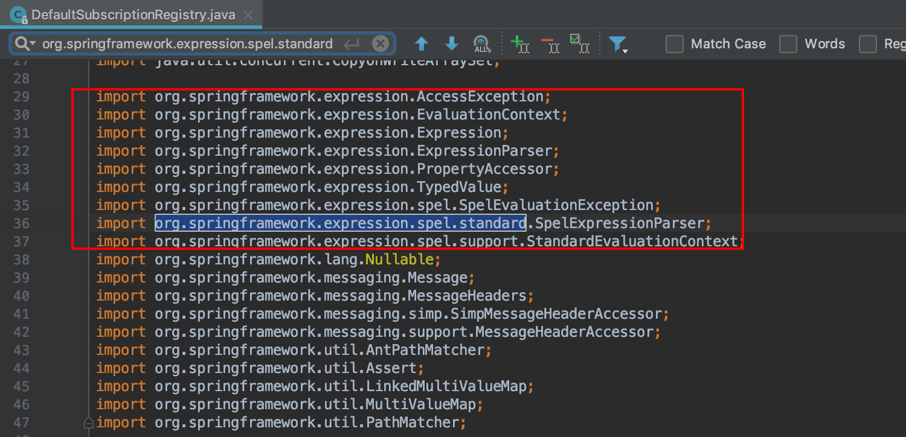
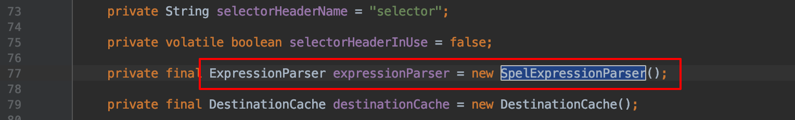
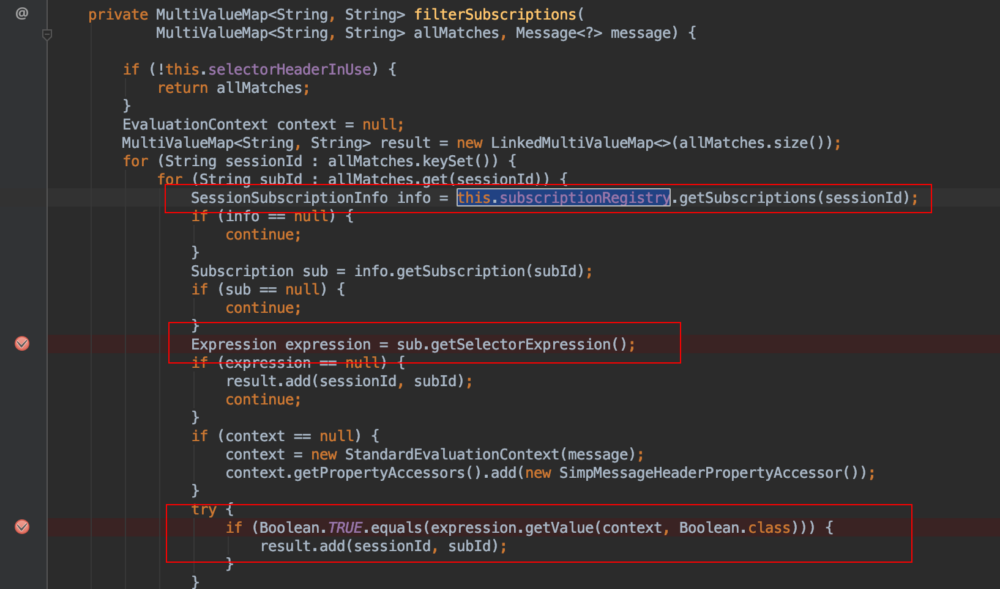

Spring Expression Language（简称SpEL）是一种功能强大的表达式语言、用于在运行时查询和操作对象图；语法上类似于Unified EL，但提供了更多的特性，特别是方法调用和基本字符串模板函数。SpEL的诞生是为了给Spring社区提供一种能够与Spring生态系统所有产品无缝对接，能提供一站式支持的表达式语言。
SpEL表达式
- 基本表达式
字面量表达式、关系，逻辑与算数运算表达式、字符串链接及截取表达式、三目运算、正则表达式以及括号优先级表达式；
- 类相关表达式
类类型表达式、类实例化、instanceof表达式、变量定义及引用、赋值表达式、自定义函数、对象属性存取及安全导航表达式、对象方法调用、Bean引用；
- 集合相关表达式
内联List、内联数组、集合、字典访问、列表、字典；
- 其他表达式
模版表达式
SpEL基础
在pom.xml导入maven或是把1
2
3
4
5
6
7
8
9
10
```xml
<properties>
<org.springframework.version>5.0.8.RELEASE</org.springframework.version>
</properties>
<dependency>
<groupId>org.springframework</groupId>
<artifactId>spring-expression</artifactId>
<version>${org.springframework.version}</version>
</dependency>
SpEL使用方式
SpEL在求表达式值时一般分为四步，其中第三步可选：首先构造一个解析器，其次解析器解析字符串表达式，在此构造上下文，最后根据上下文得到表达式运算后的值。
1 | ExpressionParser parser = new SpelExpressionParser(); |
- 创建解析器：**SpEL使用
1
2
3
4
5
6
7
8
9
10
11
12
132. 解析表达式：使用```ExpressionParser的parseExpression```来解析相应的表达式为```Expression```对象。
3. 构造上下文：准备比如变量定义等等表达式需要的上下文数据。
4. 求值：通过```Expression```接口的```getValue```方法根据上下文获得表达式值。
SpEL主要接口
1. **ExpressionParser接口**：表示解析器，默认实现是```org.springframework.expression.spel.standard```包中的```SpelExpressionParser```类，使用```parseExpression```方法将字符串表达式转换为```Expression```对象，对于ParserContext接口用于定义字符串表达式是不是模板，及模板开始与结束字符；
```java
public interface ExpressionParser {
Expression parseExpression(String expressionString);
Expression parseExpression(String expressionString, ParserContext context);
}
事例demo
1 | ExpressionParser parser = new SpelExpressionParser(); |
演示的是使用ParserContext的情况，此处定义了ParserContext实现：定义表达式是模块，表达式前缀为“#{”，后缀为“}”；使用parseExpression解析时传入的模板必须以“#{”开头，以“}”结尾。
默认传入的字符串表达式不是模板形式，如之前演示的Hello World。
EvaluationContext接口：表示上下文环境，默认实现是
org.springframework.expression.spel.support包中的StandardEvaluationContext类，使用setRootObject方法来设置根对象，使用setVariable方法来注册自定义变量，使用registerFunction来注册自定义函数等等。Expression接口：表示表达式对象，默认实现是
org.springframework.expression.spel.standard包中的1
2
3
4
5
6
7
8
9
10
11
12
13
14
15
16
17
18
19
20
21
22
SpEL语法 - 类相关表达式
1. 类类型表达式：**使用"T(Type)"来表示`java.lang.Class`实例，"Type"必须是类全限定名，"java.lang"包除外，即该包下的类可以不指定包名；使用类类型表达式还可以进行访问类静态方法及类静态字段。**
具体使用方法
```java
ExpressionParser parser = new SpelExpressionParser();
// java.lang包类访问
Class<String> result1 = parser.parseExpression("T(String)").getValue(Class.class);
System.out.println(result1);
//其他包类访问
String expression2 = "T(java.lang.Runtime).getRuntime().exec('open /Applications/Calculator.app')";
Class<Object> result2 = parser.parseExpression(expression2).getValue(Class.class);
System.out.println(result2);
//类静态字段访问
int result3 = parser.parseExpression("T(Integer).MAX_VALUE").getValue(int.class);
System.out.println(result3);
//类静态方法调用
int result4 = parser.parseExpression("T(Integer).parseInt('1')").getValue(int.class);
System.out.println(result4);类实例化：类实例化同样使用java关键字“new”，类名必须是全限定名，但java.lang包内的类型除外，如String、Integer。
instanceof表达式：SpEL支持
instanceof运算符，跟Java内使用同义；如”‘haha’ instanceof T(String)”将返回true。变量定义以及引用：变量定义通过
EvaluationContext接口的setVariable(variableName, value)方法定义；在表达式中使用”#variableName”引用；除了引用自定义变量，SpE还允许引用根对象及当前上下文对象，使用”#root”引用根对象，使用”#this”引用当前上下文对象；自定义函数：目前只支持类静态方法注册为自定义函数；SpEL使用
StandardEvaluationContext的registerFunction方法进行注册自定义函数，其实完全可以使用setVariable代替，两者其实本质是一样的
审计过程
这里拿Spring Message远程命令执行漏洞来作为例子
环境搭建
1 | git clone https://github.com/spring-guides/gs-messaging-stomp-websocket |
拿到项目代码，全局搜索一下org.springframework.expression.spel.standard，发现DefaultSubscriptionRegistry.java文件处有导入。

再搜索一下SpelExpressionParser

往下跟进发现如下关键代码，具体分析看代码注释
1 |
|
再搜索一下this.subscriptionRegistry，看看有没有调用传进去的expression。
然后发现了

在这里调用了this.subscriptionRegistry.getSubscriptions(sessionId)并从中取出info->sub-> expression。
最关键的是，这里直接调用了expression.getValue()！这说明如果能控制SpEL的表达式，就能直接命令执行！
再来看看这个filterSubscriptions函数在哪里调用。从函数的调用回溯追踪调用链如下：
filterSubscriptions -> findSubscriptionsInternal -> findSubscriptions -> sendMessageToSubscribers
sendMessageToSubscribers即发送消息的功能
回顾一下整个流程，SpEL表达式从 headers中selector获取，即发送请求时添加selector到请求的header即可传入，然后生成expression对象传入this.subscriptionRegistry，然后当发送消息的时候，最终会直接从this.subscriptionRegistry取出并调用expression.getValue()执行我们传入的SpEL表达式。
验证过程，在expression.getValue()这里打个断点，看看发送消息是否会拦截并查看调用链是否如上述分析一样。

Bingo
简单总结一下SpEL表达式注入的分析思路，可以先全局搜索org.springframework.expression.spel.standard, 或是expression.getValue()、expression.setValue()，定位到具体漏洞代码，再分析传入的参数能不能利用，最后再追踪参数来源，看看是否可控。Spring Data Commons Remote Code Execution的SpEL注入导致的代码执行同样可以用类似的思路分析。
漏洞修复
SimpleEvaluationContext、StandardEvaluationContext是SpEL提供的两个EvaluationContext
- SimpleEvaluationContext - 针对不需要SpEL语言语法的全部范围并且应该受到有意限制的表达式类别，公开Spal语言特性和配置选项的子集。
- StandardEvaluationContext - 公开全套SpEL语言功能和配置选项。您可以使用它来指定默认的根对象并配置每个可用的评估相关策略。
SimpleEvaluationContext旨在仅支持SpEL语言语法的一个子集。它不包括 Java类型引用，构造函数和bean引用；所以最直接的修复方式是使用SimpleEvaluationContext 替换StandardEvaluationContext。
文章首发于freebuf spel
参考文章：